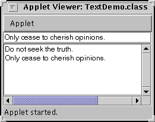

Feedback Form
|
|
Start of Tutorial > Start of Trail > Start of Lesson |
Search
Feedback Form |
TheJTextAreaclass provides a component that displays multiple lines of text, optionally allowing the user to edit the text. If you need to obtain only one line of input from the user, you should use a text field instead. If you want the text area to display its text using multiple fonts or other styles, you should use an editor pane or text pane instead. If the displayed text has a limited length and is never edited by the user, consider using a label instead.
Many of the Tutorial's examples use uneditable text areas to display program output. Here is a picture of one that lets you enter text using a text field (at the top) and then appends the entered text to a text area (underneath).
 [PENDING: This snapshot will be updated.]You can run TextDemo using JavaTM Web Start
. The source code is in
TextDemo.java. Here's the code that creates and initializes the text area:
The two arguments to thetextArea = new JTextArea(5, 20); JScrollPane scrollPane = new JScrollPane(textArea, JScrollPane.VERTICAL_SCROLLBAR_ALWAYS, JScrollPane.HORIZONTAL_SCROLLBAR_ALWAYS); textArea.setEditable(false);JTextAreaconstructor are hints as to the number of rows and columns, respectively, the text area should display. The scroll pane that contains the text area pays attention to these hints when determining how big the scroll pane should be.Without the creation of the scroll pane, the text area would not automatically scroll. The
JScrollPaneconstructor shown in the preceding snippet sets up the text area for viewing in a scroll pane, and specifies that the scroll pane's scroll bars should both always be visible. See How to Use Scroll Panes if you want further information.By default, text areas are editable. The code
setEditable(false)makes the text area uneditable. It is still selectable and the user can copy data from it, but the user can't change the text area's contents directly.The following code adds text to the text area. Note that the text system uses the '\n' character internally to represent newlines; for details, see the API documentation for
DefaultEditorKitprivate final static String newline = "\n"; ... textArea.append(text + newline);Unless the user has moved the caret (insertion point) by clicking or dragging in the text area, the text area automatically scrolls so that the appended text is visible. You can force the text area to scroll to the bottom by moving the caret to the end of the text area, like this, after the call to
append:textArea.setCaretPosition(textArea.getDocument().getLength());
You can customize text areas in several ways. For example, although a given text area can display text in only one font and color, you can (as for any component) set which font and color it uses. You can also determine how the text area wraps lines and the number of characters per tab. Finally, you can use the methodsJTextAreainherits fromJTextComponentto set properties such as the caret, support for dragging, selection color, and so on.The following code, taken from
TextSamplerDemo.javaJTextArea textArea = new JTextArea( "This is an editable JTextArea. " + "A text area is a \"plain\" text component, " + "which means that although it can display text " + "in any font, all of the text is in the same font." ); textArea.setFont(new Font("Serif", Font.ITALIC, 16)); textArea.setLineWrap(true); textArea.setWrapStyleWord(true);By default, a text area doesn't wrap lines that are too long for the display area. Instead it uses one line for all the text between newline characters and — if the text area is within a scroll pane — allows itself to be scrolled horizontally. This example turns line wrapping on with a call to
setLineWrapand then callssetWrapStyleWordto indicate that the text area should wrap lines at word boundaries rather than at character boundaries.To provide scrolling capability, the example puts the text area in a scroll pane.
You might have noticed that theJScrollPane areaScrollPane = new JScrollPane(textArea); areaScrollPane.setVerticalScrollBarPolicy( JScrollPane.VERTICAL_SCROLLBAR_ALWAYS); areaScrollPane.setPreferredSize(new Dimension(250, 250));JTextAreaconstructor used in this example does not specify the number of rows or columns. Instead, the code limits the size of the text area by setting the scroll pane's preferred size.
The following tables list the commonly usedJTextAreaconstructors and methods. Other methods you are likely to call are defined inJTextComponent, and listed in The Text Component API.You might also invoke methods on a text area that it inherits from its other ancestors, such as
setPreferredSize,setForeground,setBackground,setFont, and so on. See The JComponent Class for tables of commonly used inherited methods.The API for using text areas falls into these categories:
Setting or Getting Contents Method or Constructor Purpose JTextArea()
JTextArea(String)
JTextArea(String, int, int)
JTextArea(int, int)Create a text area. When present, the Stringargument contains the initial text. Theintarguments specify the desired width in columns and height in rows, respectively.void setText(String)
String getText()
(defined inJTextComponent)Set or get the text displayed by the text area.
Fine Tuning the Text Area's Appearance Method Purpose void setEditable(boolean)
boolean isEditable()
(defined inJTextComponent)Set or get whether the user can edit the text in the text area. void setColumns(int);
int getColumns()Set or get the number of columns displayed by the text area. This is really just a hint for computing the area's preferred width. void setRows(int);
int getRows()Set or get the number of rows displayed by the text area. This is a hint for computing the area's preferred width. int setTabSize(int)Set the number of characters a tab is equivalent to. int setLineWrap(boolean)Set whether lines are wrapped if they are too long to fit within the allocated width. By default, this property is false and lines are not wrapped. int setWrapStyleWord(boolean)Set whether lines can be wrapped at white space (word boundaries) or at any character. By default, this property is false, and lines can be wrapped (if line wrapping is turned on) at any character.
Implementing the Text Area's Functionality Method Purpose void selectAll()
(defined inJTextComponent)Select all characters in the text area. void append(String)Add the specified text to the end of the text area. void insert(String, int)Insert the specified text at the specified position. void replaceRange(String, int, int)Replace the text between the indicated positions with the specified string. int getLineCount()
int getLineOfOffset(int)
int getLineStartOffset(int)
int getLineEndOffset(int)Utilities for finding a line number or the position of the beginning or end of the specified line.
Many Tutorial examples useJTextArea, typically to provide an area where events are logged. Here's a partial list of the demos that use text areas.
Example Where Described Notes TextDemo This section An application that appends user-entered text to a text area. TextSamplerDemo Using Text Components Uses one of each of Swing's text components. HtmlDemo Using HTML in Swing Components A text area lets the user enter HTML code to be displayed in a label. BasicDnD How to Use Drag and Drop and Data Transfer Demonstrates built-in drag-and-drop functionality of several Swing components, including text areas. ExtendedDnDDemo How to Use Drag and Drop and Data Transfer Demonstrates dragging and dropping text between a text area, a list, and a table. DragFileDemo How to Use Drag and Drop and Data Transfer Demonstrates dragging file contents from a file chooser into a text area. A tabbed pane lets you easily switch between files. FocusConceptsDemo How to Use the Focus Subsystem Demonstrates how focus works, using a few components that include a text area.
|
|
Start of Tutorial > Start of Trail > Start of Lesson |
Search
Feedback Form |
Copyright 1995-2004 Sun Microsystems, Inc. All rights reserved.